中文
中文M. A. Rowe et al.
Editor’s Note
By the new millennium, careful tests of John Bell’s celebrated “inequalities” had indicated that quantum physics seems to be inconsistent with any local realistic interpretation—that is, with a view in which systems have definite properties independent of other parts of the universe, and no influence can travel faster than light. But argument persisted due to various “loopholes” linked to experimental imperfections, including the limited efficiency of particle detectors. Here Mary Rowe and colleagues report violation of Bell’s inequalities in experiments using heavy beryllium ions, for which they were able to detect all particles and thus close one loophole. Nonetheless, not all possible local realistic interpretations of quantum theory have been excluded even now. 中文
Local realism is the idea that objects have definite properties whether or not they are measured, and that measurements of these properties are not affected by events taking place sufficiently far away1. Einstein, Podolsky and Rosen2 used these reasonable assumptions to conclude that quantum mechanics is incomplete. Starting in 1965, Bell and others constructed mathematical inequalities whereby experimental tests could distinguish between quantum mechanics and local realistic theories1,3-5. Many experiments1,6-15 have since been done that are consistent with quantum mechanics and inconsistent with local realism. But these conclusions remain the subject of considerable interest and debate, and experiments are still being refined to overcome “loopholes” that might allow a local realistic interpretation. Here we have measured correlations in the classical properties of massive entangled particles (9Be+ ions): these correlations violate a form of Bell’s inequality. Our measured value of the appropriate Bell’s “signal” is 2.25±0.03, whereas a value of 2 is the maximum allowed by local realistic theories of nature. In contrast to previous measurements with massive particles, this violation of Bell’s inequality was obtained by use of a complete set of measurements. Moreover, the high detection efficiency of our apparatus eliminates the so-called “detection” loophole. 中文
EARLY experiments to test Bell’s inequalities were subject to two primary, although seemingly implausible, loopholes. The first might be termed the locality or “lightcone” loophole, in which the correlations of apparently separate events could result from unknown subluminal signals propagating between different regions of the apparatus. Aspect16 has given a brief history of this issue, starting with the experiments of ref. 8 and highlighting the strict relativistic separation between measurements reported by the Innsbruck group15. Similar results have also been reported for the Geneva experiment14,17. The second loophole is usually referred to as the detection loophole. All experiments up to now have had detection efficiencies low enough to allow the possibility that the subensemble of detected events agrees with quantum mechanics even though the entire ensemble satisfies Bell’s inequalities. Therefore it must be assumed that the detected events represent the entire ensemble; a fair-sampling hypothesis. Several proposals for closing this loophole have been made18-24; we believe the experiment that we report here is the first to do so. Another feature of our experiment is that it uses massive particles. A previous test of Bell’s inequality was carried out on protons25, but the interpretation of the detected events relied on quantum mechanics, as symmetries valid given quantum mechanics were used to extrapolate the data to a complete set of Bell’s angles. Here we do not make such assumptions. 中文
A Bell measurement of the type suggested by Clauser, Horne, Shimony and Holt5 (CHSH) consists of three basic ingredients (Fig. 1a). First is the preparation of a pair of particles in a repeatable starting configuration (the output of the “magic” box in Fig. 1a). Second, a variable classical manipulation is applied independently to each particle; these manipulations are labelled ϕ1 and ϕ2. Finally, in the detection phase, a classical property with two possible outcomes is measured for each of the particles. The correlation of these outcomes
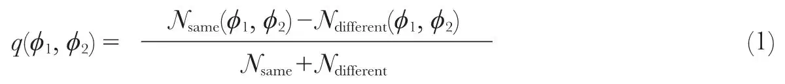
is measured by repeating the experiment many times. Here Nsame and Ndifferent are the number of measurements where the two results were the same and different, respectively. The CHSH form of Bell’s inequalities states that the correlations resulting from local realistic theories must obey:
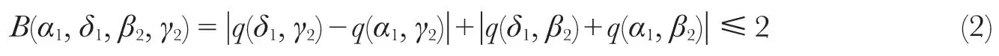
where α1 and δ1 (β2 and γ2) are specific values of ϕ1 (ϕ2). For example, in a photon experiment15, parametric down-conversion prepares a pair of photons in a singlet Einstein–Podolsky–Rosen (EPR) pair. After this, a variable rotation of the photon polarization is applied to each photon. Finally, the photons’ polarization states, vertical or horizontal, are determined. 中文
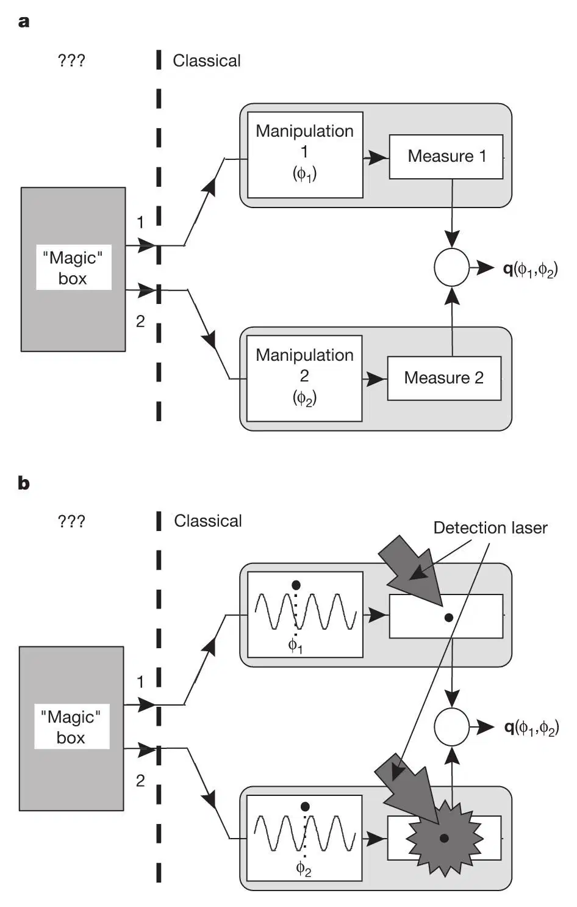
Fig. 1. Illustration of how Bell’s inequality experiments work. The idea is that a “magic box” emits a pair of particles. We attempt to determine the joint properties of these particles by applying various classical manipulations to them and observing the correlations of the measurement outputs. a, A general CHSH type of Bell’s inequality experiment. b, Our experiment. The manipulation is a laser wave applied with phases ϕ1 and ϕ2 to ion 1 and ion 2 respectively. The measurement is the detection of photons emanating from the ions upon application of a detection laser. Two possible measurement outcomes are possible, detection of few photons (as depicted for ion 1 in the figure) or the detection of many photons (as depicted for ion 2 in the figure). 中文
Our experiment prepares a pair of two-level atomic ions in a repeatable configuration (entangled state). Next, a laser field is applied to the particles; the classical manipulation variables are the phases of this field at each ion’s position. Finally, upon application of a detection laser beam, the classical property measured is the number of scattered photons emanating from the particles (which effectively measures their atomic states). Figure 1b shows how our experiment maps onto the general case. Entangled atoms produced in the context of cavity-quantum-electrodynamics26 could similarly be used to measure Bell’s inequalities. 中文
The experimental apparatus is as described in ref. 27. Two 9Be+ ions are confined along the axis of a linear Paul trap with an axial centre-of-mass frequency of 5 MHz. We select two resolved levels of the 2S1/2 ground state,
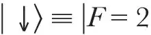
,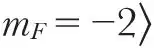
and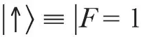
,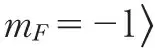
, where F and mF are the quantum numbers of the total angular momentum. These states are coupled by a coherent stimulated Raman transition. The two laser beams used to drive the transition have a wavelength of 313 nm and a difference frequency near the hyperfine splitting of the states, ω0≅2π×1.25 GHz. The beams are aligned perpendicular to each other, with their difference wavevector Δk along the trap axis. As described in ref. 27, it is possible in this configuration to produce the entangled state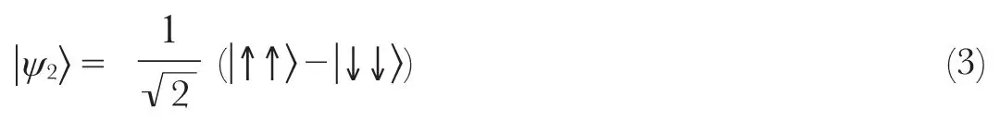
The fidelity
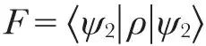
, where is the density matrix for the state we make, was about 88% for the data runs. In the discussion below we assume
is the density matrix for the state we make, was about 88% for the data runs. In the discussion below we assume 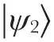
as the starting condition for the experiment. 中文
After making the state
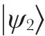
, we again apply Raman beams for a pulse of short duration (~400 ns) so that the state of each ion j is transformed in the interaction picture as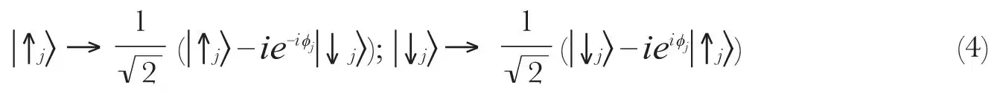
The phase, ϕj, is the phase of the field driving the Raman transitions (more specifically, the phase difference between the two Raman beams) at the position of ion j and corresponds to the inputs ϕ1 and ϕ2 in Fig. 1. We set this phase in two ways in the experiment. First, as an ion is moved along the trap axis this phase changes by Δk· Δxj. For example, a translation of  along the trap axis corresponds to a phase shift of 2π. In addition, the laser phase on both ions is changed by a common amount by varying the phase, ϕs, of the radio-frequency synthesizer that determines the Raman difference frequency. The phase on ion j is therefore
along the trap axis corresponds to a phase shift of 2π. In addition, the laser phase on both ions is changed by a common amount by varying the phase, ϕs, of the radio-frequency synthesizer that determines the Raman difference frequency. The phase on ion j is therefore
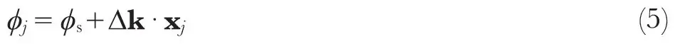
In the experiment, the axial trap strength is changed so that the ions move about the centre of the trap symmetrically, giving Δx1=-Δx2. Therefore the trap strength controls the differential phase, Δϕ≡ϕ1-ϕ2=Δk· (x1-x2) , and the synthesizer controls the total phase, ϕtot≡ϕ1+ϕ2=2ϕs. The calibration of these relations is discussed in the Methods. 中文
The state of an ion,
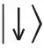
or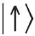
, is determined by probing the ion with circularly polarized light from a “detection” laser beam27. During this detection pulse, ions in the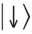
or bright state scatter many photons, and on average about 64 of these are detected with a photomultiplier tube, while ions in the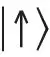
or dark state scatter very few photons. For two ions, three cases can occur: zero ions bright, one ion bright, or two ions bright. In the one-ion-bright case it is not necessary to know which ion is bright because the Bell’s measurement requires only knowledge of whether or not the ions’ states are different. Figure 2 shows histograms, each with 20,000 detection measurements. The three cases are distinguished from each other with simple discriminator levels in the number of photons collected with the phototube. 中文
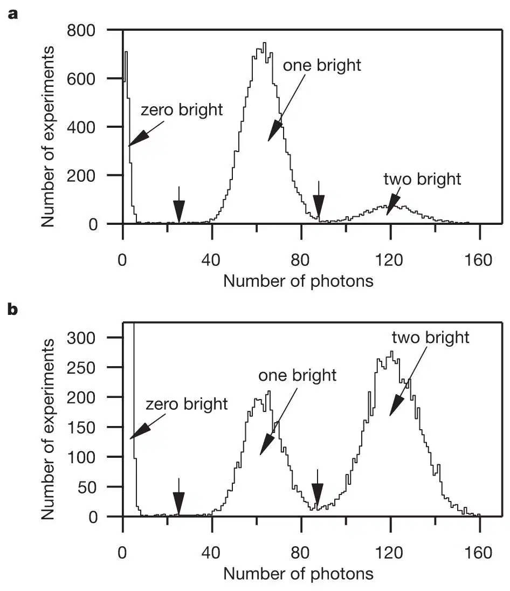
Fig. 2. Typical data histograms comprising the detection measurements of 20,000 experiments taking a total time of about 20 s. In each experiment the population in the
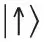
state is first coherently transferred to the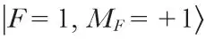
to make it even less likely to fluoresce upon application of the detection laser. The detection laser is turned on and the number of fluorescence photons detected by the phototube in 1 ms is recorded. The cut between the one bright and two bright cases is made so that the fractions of two equal distributions which extend past the cut points are equal. The vertical arrows indicate the location of the cut between the 0 (1) bright and 1 (2) bright peaks at 25 (86) counts. a, Data histogram with a negative correlation using ϕ1=3π / 8 and ϕ2=3π / 8. For these data N0≅2,200, N1≅15,500 and N2≅2,300. b, Data histogram with a positive correlation using ϕ1=3π / 8 and ϕ2=-π / 8. For these data N0≅7,700, N1≅4,400 and N2≅7,900. The zero bright peak extends vertically to 2,551. 中文
An alternative description of our experiment can be made in the language of spin-one-half magnetic moments in a magnetic field (directed in the  direction). The dynamics of the spin system are the same as for our two-level system28. Combining the manipulation (equation (4)) and measurement steps, we effectively measure the spin projection of each ion j in the
direction). The dynamics of the spin system are the same as for our two-level system28. Combining the manipulation (equation (4)) and measurement steps, we effectively measure the spin projection of each ion j in the  direction, where the vector is in the
direction, where the vector is in the  plane at an angle ϕj to the
plane at an angle ϕj to the  axis. Although we have used quantum-mechanical language to describe the manipulation and measurement steps, we emphasize that both are procedures completely analogous to the classical rotations of wave-plates and measurements of polarization in an optical apparatus. 中文
axis. Although we have used quantum-mechanical language to describe the manipulation and measurement steps, we emphasize that both are procedures completely analogous to the classical rotations of wave-plates and measurements of polarization in an optical apparatus. 中文
Here we calculate the quantum-mechanical prediction for the correlation function. Our manipulation step transforms the starting state,
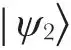
, to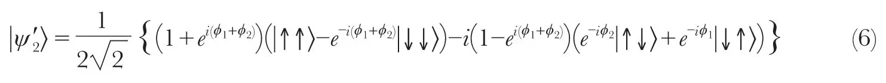
Using the measurement operators  and
and  , the correlation function is calculated to be
, the correlation function is calculated to be
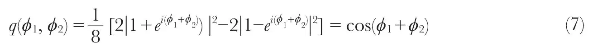
The CHSH inequality (equation (2)) is maximally violated by quantum mechanics at certain sets of phase angles. One such set is α1=-(π / 8), δ1=3π / 8, β2=-(π / 8) and γ2=3π / 8. With these phase angles quantum mechanics predicts
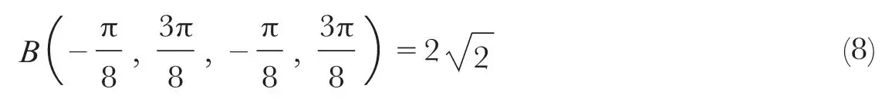
This violates the local realism condition, which requires that B≤2. 中文
The correlation function is measured experimentally at four sets of phase angles, listed in Table 1. The experiment is repeated Ntot=20,000 times at each of the four sets of phases. For each set of phases the correlation function is calculated using
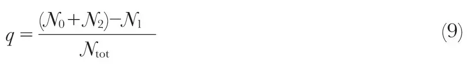
Here N0, N1 and N2 are the number of events with zero, one and two ions bright, respectively. The correlation values from the four sets of phase angles are combined into the Bell’s signal, B(α1, δ1, β2, γ2), using equation (2). The correlation values and resulting Bell’s signals from five data runs are given in Table 2. 中文
Table 1. The four sets of phase angles used for the Bell’s experiment
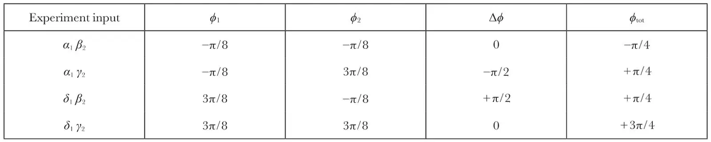
Table 2. Correlation values and resulting Bell’s signals for five experimental runs
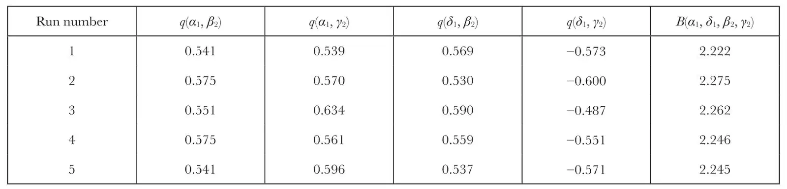
The experimental angle values were α1=-(π / 8), δ1=3π / 8, β2=-(π / 8), and γ2=3π / 8. The statistical errors are 0.006 and 0.012 for the q and B values respectively. The systematic errors (see text) are 0.03 and 0.06 for the q and B values respectively. 中文
So far we have described the experiment in terms of perfect implementation of the phase angles. In the actual experiment, however, α1, δ1, β2 and γ2 are not quite the same angles both times they occur in the Bell’s inequality. In our experiment the dominant reason for this error results from the phase instability of the synthesizer, which can cause the angles to drift appreciably during four minutes, the time required to take a complete set of measurements. This random drift causes a root-mean-squared error for the correlation function of ±0.03 on this timescale, which propagates to an error of ±0.06 for the Bell’s signal. The error for the Bell’s signal from the five combined data sets is then ±0.03, consistent with the run-to-run variation observed. Averaging the five Bell’s signals from Table 2, we arrive at our experimental result, which is
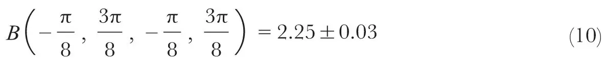
If we take into account the imperfections of our experiment (imperfect state fidelity, manipulations, and detection), this value agrees with the prediction of quantum mechanics. 中文
The result above was obtained using the outcomes of every experiment, so that no fair-sampling hypothesis is required. In this case, the issue of detection efficiency is replaced by detection accuracy. The dominant cause of inaccuracy in our state detection comes from the bright state becoming dark because of optical pumping effects. For example, imperfect circular polarization of the detection light allows an ion in the state to be pumped to
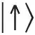
, resulting in fewer collected photons from a bright ion. Because of such errors, a bright ion is misidentified 2% of the time as being dark. This imperfect detection accuracy decreases the magnitude of the measured correlations. We estimate that our Bell’s signal would be 2.37 with perfect detection accuracy. 中文
We have thus presented experimental results of a Bell’s inequality measurement where a measurement outcome was recorded for every experiment. Our detection efficiency was high enough for a Bell’s inequality to be violated without requiring the assumption of fair sampling, thereby closing the detection loophole in this experiment. The ions were separated by a distance large enough that no known interaction could affect the results; however, the lightcone loophole remains open here. Further details of this experiment will be published elsewhere. 中文
Methods
Phase calibration
The experiment was run with specific phase differences of the Raman laser beam fields at each ion. In order to implement a complete set of laser phases, a calibration of the phase on each ion as a function of axial trap strength was made. We emphasize that the calibration method is classical in nature. Although quantum mechanics guided the choice of calibration method, no quantum mechanics was used to interpret the signal. General arguments are used to describe the signal resulting from a sequence of laser pulses and its dependence on the classical physical parameters of the system, the laser phase at the ion, and the ion’s position. 中文
In the calibration procedure, a Ramsey experiment was performed on two ions. The first π / 2 Rabi rotation was performed identically each time. The laser phases at the ions’ positions for the second π / 2 Rabi rotation were varied, ϕ1 for ion 1 and ϕ2 for ion 2. The detection signal is the total number of photons counted during detection. With an auxiliary one-ion experiment we first established empirically that the individual signal depends only on the laser phase at an individual ion and is C+Acosϕj. Here C and A are the offset and amplitude of the one-ion signal. We measure the detector to be linear, so that the detection signal is the sum of the two ions’ individual signals. The two-ion signal is therefore
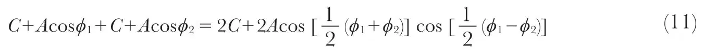
By measuring the fringe amplitude and phase as ϕs=(ϕ1+ϕ2) / 2 is swept, we calibrate ϕ1-ϕ2 as a function of trap strength and ensure that ϕ1+ϕ2 is independent of trap strength. 中文
We use the phase convention that at the ion separation used for the entanglement preparation pulse the maximum of the correlation function is at ϕ1=ϕ2=0 (or Δϕ=ϕtot=0). Our measurement procedure begins by experimentally finding this condition of ϕ1=ϕ2=0 by keeping Δϕ=0 and scanning the synthesizer phase to find the maximum correlation. The experiment is then adjusted to the phase angles specified above by switching the axial trap strength to set Δϕ and incrementing the synthesizer phase to set ϕtot. 中文
Locality issues
The ions are separated by a distance of approximately 3 μm, which is greater than 100 times the size of the wavepacket of each ion. Although the Coulomb interaction strongly couples the ions’ motion, it does not affect the ions’ internal states. At this distance, all known relevant interactions are expected to be small. For example, dipole–dipole interactions between the ions slightly modify the light-scattering intensity, but this effect is negligible for the ion–ion separations used29. Also, the detection solid angle is large enough that Young’s interference fringes, if present, are averaged out30. Even though all known interactions would cause negligible correlations in the measurement outcomes, the ion separation is not large enough to eliminate the lightcone loophole. 中文
We note that the experiment would be conceptually simpler if, after creating the entangled state, we separated the ions so that the input manipulations and measurements were done individually. However, unless we separated the ions by a distance large enough to overcome the lightcone loophole, this is only a matter of convenience of description and does not change the conclusions that can be drawn from the results. 中文
(409, 791-794; 2001)
M. A. Rowe*, D. Kielpinski*, V. Meyer*, C. A. Sackett*, W. M. Itano*, C. Monroe† & D. J. Wineland*
* Time and Frequency Division, National Institute of Standards and Technology, Boulder, Colorado 80305, USA
† Department of Physics, University of Michigan, Ann Arbor, Michigan 48109, USA
Received 25 October; accepted 30 November 2000.
References:
1. Clauser, J. F. & Shimony, A. Bell’s theorem: experimental tests and implications. Rep. Prog. Phys. 41, 1883-1927 (1978).
2. Einstein, A., Podolsky, B. & Rosen, N. Can quantum-mechanical description of reality be considered complete? Phys. Rev. 47, 777-780 (1935).
3. Bell, J. S. On the Einstein-Podolsky-Rosen paradox. Physics 1, 195-200 (1965).
4. Bell, J. S. in Foundations of Quantum Mechanics (ed. d’Espagnat, B.) 171-181 (Academic, New York, 1971).
5. Clauser, J. F., Horne, M. A., Shimony, A. & Holt, R. A. Proposed experiment to test local hidden-variable theories. Phys. Rev. Lett. 23, 880-884 (1969).
6. Freedman, S. J. & Clauser, J. F. Experimental test of local hidden-variable theories. Phys. Rev. Lett. 28, 938-941 (1972).
7. Fry, E. S. & Thompson, R. C. Experimental test of local hidden-variable theories. Phys. Rev. Lett. 37, 465-468 (1976).
8. Aspect, A., Grangier, P. & Roger, G. Experimental realization of Einstein-Podolsky-Rosen-Bohm Gedankenexperiment: a new violation of Bell’s inequalities. Phys. Rev. Lett. 49, 91-94 (1982).
9. Aspect, A., Dalibard, J. & Roger, G. Experimental test of Bell’s inequalities using time-varying analyzers. Phys. Rev. Lett. 49, 1804-1807 (1982).
10. Ou, Z. Y. & Mandel, L. Violation of Bell’s inequality and classical probability in a two-photon correlation experiment. Phys. Rev. Lett. 61, 50-53 (1988).
11. Shih, Y. H. & Alley, C. O. New type of Einstein-Podolsky-Rosen-Bohm experiment using pairs of light quanta produced by optical parametric down conversion. Phys. Rev. Lett. 61, 2921-2924 (1988).
12. Tapster, P. R., Rarity, J. G. & Owens, P. C. M. Violation of Bell’s inequality over 4 km of optical fiber. Phys. Rev. Lett. 73, 1923-1926 (1994).
13. Kwiat, P. G., Mattle, K., Weinfurter, H. & Zeilinger, A. New high-intensity source of polarization-entangled photon pairs. Phys. Rev. Lett. 75, 4337-4341 (1995).
14. Tittel, W., Brendel, J., Zbinden, H. & Gisin, N. Violation of Bell inequalities by photons more than 10 km apart. Phys. Rev. Lett. 81, 3563-3566 (1998).
15. Weihs, G. et al. Violation of Bell’s inequality under strict Einstein locality conditions. Phys. Rev. Lett. 81, 5039-5043 (1998).
16. Aspect, A. Bell’s inequality test: more ideal than ever. Nature 398, 189-190 (1999).
17. Gisin, N. & Zbinden, H. Bell inequality and the locality loophole: active versus passive switches. Phys. Lett. A 264, 103-107 (1999).
18. Lo, T. K. & Shimony, A. Proposed molecular test of local hidden-variable theories. Phys. Rev. A 23, 3003-3012 (1981).
19. Kwiat, P. G., Eberhard, P. H., Steinberg, A. M. & Chiao, R. Y. Proposal for a loophole-free Bell inequality experiment. Phys. Rev. A 49, 3209-3220 (1994).
20. Huelga, S. F., Ferrero, M. & Santos, E. Loophole-free test of the Bell inequality. Phys. Rev. A 51, 5008-5011 (1995).
21. Fry, E. S., Walther, T. & Li, S. Proposal for a loophole free test of the Bell inequalities. Phys. Rev. A 52, 4381-4395 (1995).
22. Freyberger, M., Aravind, P. K., Horne, M. A. & Shimony, A. Proposed test of Bell’s inequality without a detection loophole by using entangled Rydberg atoms. Phys. Rev. A 53, 1232-1244 (1996).
23. Brif, C. & Mann, A. Testing Bell’s inequality with two-level atoms via population spectroscopy. Europhys. Lett. 49, 1-7 (2000).
24. Beige, A., Munro, W. J. & Knight, P. L. A Bell’s inequality test with entangled atoms. Phys. Rev. A 62, 052102-1–052102-9 (2000).
25. Lamehi–Rachti, M. & Mittig, W. Quantum mechanics and hidden variables: a test of Bell’s inequality by the measurement of the spin correlation in low-energy proton-proton scattering. Phys. Rev. D 14, 2543-2555 (1976).
26. Hagley, E. et al. Generation of Einstein-Podolsky-Rosen pairs of atoms. Phys. Rev. Lett. 79, 1-5 (1997).
27. Sackett, C. A. et al. Experimental entanglement of four particles. Nature 404, 256-259 (2000).
28. Feynman, R. P., Vernon, F. L. & Hellwarth, R. W. Geometrical representation of the Schrödinger equation for solving maser problems. J. Appl. Phys. 28, 49-52 (1957).
29. Richter, T. Cooperative resonance fluorescence from two atoms experiencing different driving fields. Optica Acta 30, 1769-1780 (1983).
30. Eichmann, U. et al. Young’s interference experiment with light scattered from two atoms. Phys. Rev. Lett. 70, 2359-2362 (1993).
Acknowledgements. We thank A. Ben-Kish, J. Bollinger, J. Britton, N. Gisin, P. Knight, P. Kwiat and I. Percival for useful discussions and comments on the manuscript. This work was supported by the US National Security Agency (NSA) and the Advanced Research and Development Activity (ARDA), the US Office of Naval Research, and the US Army Research Office. This paper is a contribution of the National Institute of Standards and Technology and is not subject to US copyright.
Correspondence and requests for materials should be addressed to D.J.W. (e-mail: david.wineland@boulder.nist.gov).